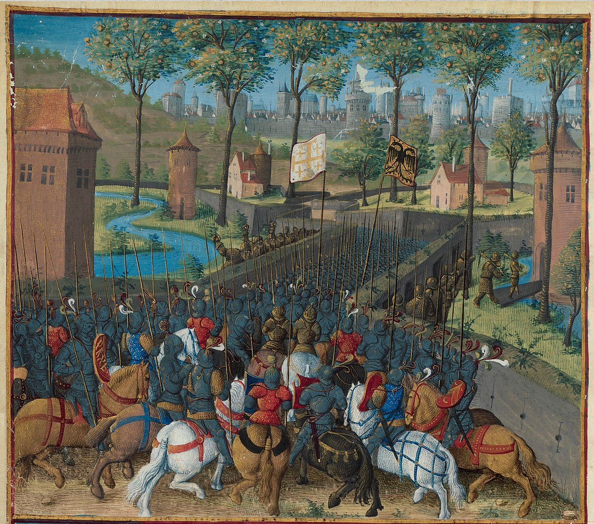
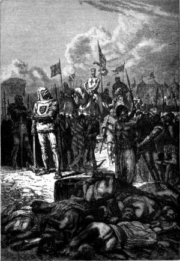

جنگ صلیبی اول (۱۰۹۶-۱۰۹۹)

جنگ صلیبی اول به دعوت پاپ اوربان دوم در سال ۱۰۹۵ آغاز شد و هدف آن بازپسگیری اراضی مقدس از کنترل مسلمانان بود. این جنگ با فتح اورشلیم توسط صلیبیون در سال ۱۰۹۹ به اوج خود رسید.
جنگ صلیبی دوم (۱۱۴۷-۱۱۴۹)
پس از سقوط ادسا در سال ۱۱۴۴، جنگ صلیبی دوم به رهبری لوئی هفتم از فرانسه و کنراد سوم از آلمان آغاز شد، اما بهدلیل عدم هماهنگی و شکستهای نظامی به موفقیت نرسید.
جنگ صلیبی سوم (۱۱۸۹-۱۱۹۲)
جنگ صلیبی سوم در پاسخ به فتح اورشلیم توسط صلاحالدین ایوبی آغاز شد. ریچارد شیردل، فیلیپ دوم و فردریک بارباروسا از رهبران اصلی آن بودند، اما نتوانستند اورشلیم را بازپسگیرند.
جنگ صلیبی چهارم (۱۲۰۲-۱۲۰۴)
بهجای رفتن به اراضی مقدس، صلیبیون در این جنگ قسطنطنیه را غارت کردند و امپراتوری لاتین قسطنطنیه را تأسیس نمودند، که باعث تشدید اختلاف بین کلیسای شرق و غرب شد.
جنگ صلیبی پنجم (۱۲۱۷-۱۲۲۱)
این جنگ با حمله به مصر، قلب قدرت مسلمانان، تلاش کرد تا کنترل اورشلیم را بهدست آورد، اما با شکست در دمیاط به پایان رسید.
جنگ صلیبی ششم (۱۲۲۸-۱۲۲۹)
فردریک دوم، امپراتور مقدس روم، بدون درگیری نظامی و از طریق مذاکره، اورشلیم را برای مدت کوتاهی بازپسگرفت.
جنگ صلیبی هفتم (۱۲۴۸-۱۲۵۴)
لوئی نهم از فرانسه به مصر حمله کرد، اما به اسارت درآمد و با پرداخت فدیه آزاد شد.
جنگ صلیبی هشتم (۱۲۷۰)
لوئی نهم بار دیگر رهبری این جنگ را برعهده گرفت، اما با مرگ او در تونس، جنگ بینتیجه ماند.
جنگ صلیبی نهم (۱۲۷۱-۱۲۷۲)
این جنگ به رهبری ادوارد یکم از انگلستان انجام شد، اما موفقیت چشمگیری نداشت و بهعنوان آخرین جنگ صلیبی شناخته میشود.
دیدگاهها و پرسشها